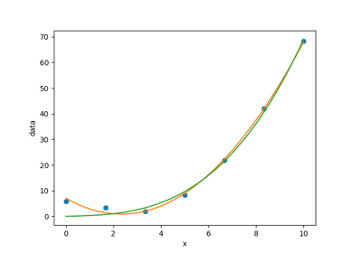
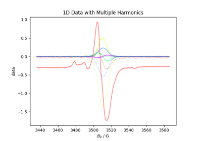
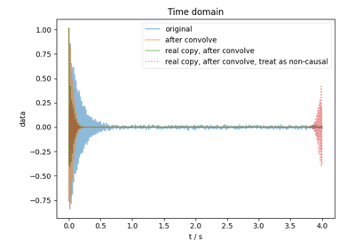
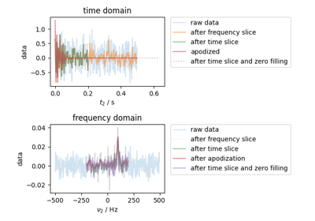
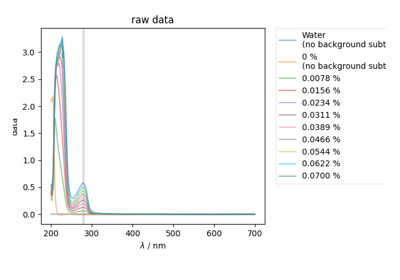
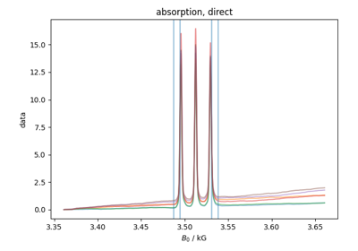

PySpecData Examples¶
Below is a gallery of examples using our various functions.


Polynomial Fitting

Bruker cw ESR Data

Simple Convolution Example

ppm Example


Fit complex data
Using the DCCT function

Basic Slicing/Filtering Example
Basic Slicing/Filtering Example

BSA UV-Vis Calibration


Quantitative ESR
Individual Functions¶
These are not very important – just tests to verify the performance of individual functions.